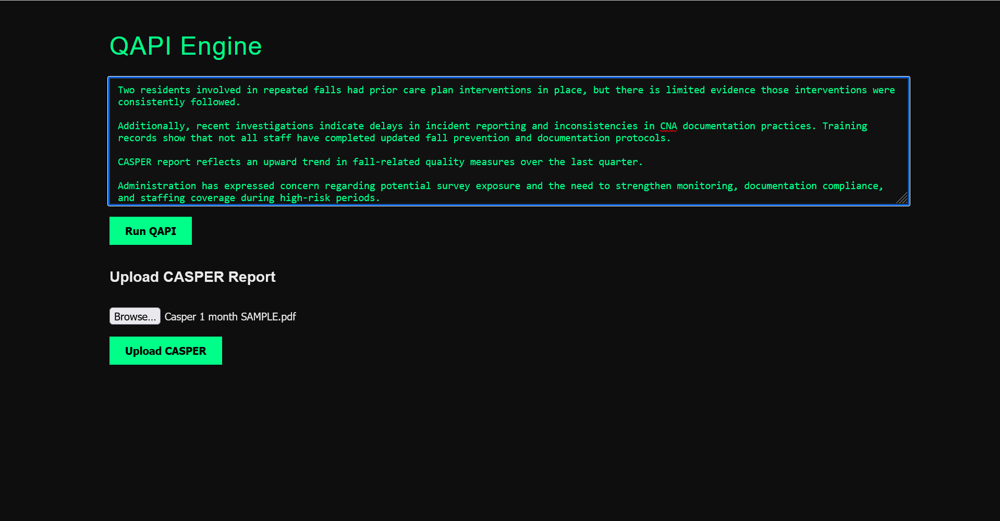
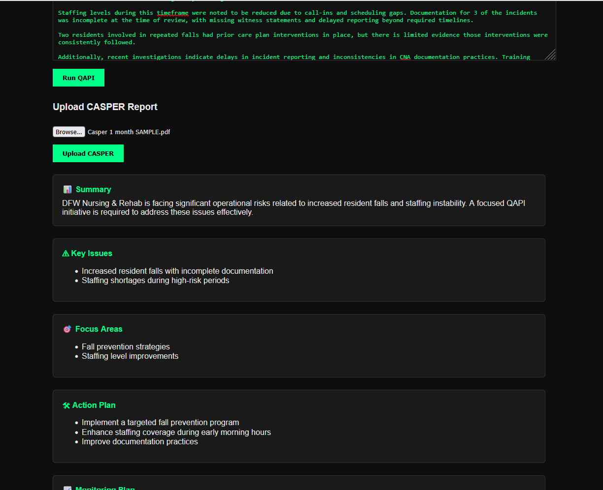

Operational Input
Maven organizes CASPER reports, QAPI summaries, investigations, POCs, survey history, and monitoring results so leadership can review facility risk in context.

Connect CASPER, QAPI, investigations, and survey history into operational priorities.
Maven organizes CASPER reports, QAPI summaries, investigations, POCs, survey history, and monitoring results so leadership can review facility risk in context.

Clearer visibility into risk signals, QAPI priorities, monitoring needs, and follow-up work across operations.

See how administrators use CASPER and facility intelligence →
Bring continuous risk visibility into your compliance operation.